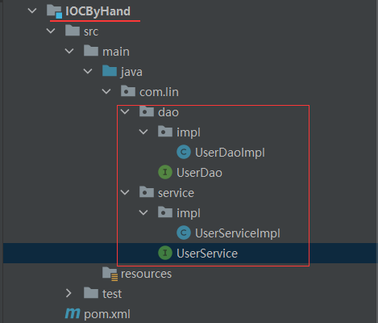
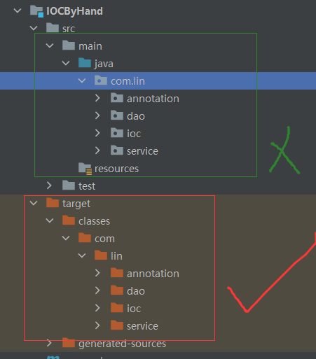

手写IOC的过程
- 第一步：创建子模块
- 第二步：常见测试类——dao和service
- 第三步：创建两个注解
@Bean：创建对象Di：属性注入
- 第四步：创建Bean容器接口
ApplicationContext，定义方法和返回对象 - 实现bean容器接口
准备工作
先把模块建好，创建好测试类
自定义注解
package com.lin.annotation;
@Target({ElementType.TYPE})// 表示该注解可以使用在类、接口上面
@Retention(RetentionPolicy.RUNTIME)// 表示该的生命周期，在运行时有效
public @interface Bean {
}
package com.lin.annotation;
@Target({ElementType.FIELD})
@Retention(RetentionPolicy.RUNTIME)
public @interface Di {
}
定义bean容器接口
package com.lin.ioc;
public interface ApplicationContextDiy {
// 根据对象类型（Class），返回对象的实例
Object getBean(Class clazz);
}
实现bean容器接口
整体思路
要有一个容器（Map集合）装相关的对象
创建有参构造器，传递包的路径，设置包的扫描规则：如果那个类上面有
@Bean注解，就会通过反射，把这个类实例化。以下是预期的效果
// 通过扫描com.lin包下的类，和其子包下的类，找到@Bean的注解，通过反射，实例化 ApplicationContextDiy context =new ApplicationContextDiyImpl("com.lin"); UserController controller = context.getBean(UserController.class);第一步：把
com.lin中的.替换成\第二步：获取包的绝对路径，这个路径不是我们写代码的那个路径，而是编译之后的路径
/** 获取当前线程的上下文类加载器： Thread.currentThread().getContextClassLoader() (这个上下文加载器要看jvn) getResources(packagePath)： 获取指定包路径下的所有资源 Enumeration<URL> 存储的是与给定路径相匹配的资源的URL */ Enumeration<URL> urls=Thread.currentThread().getContextClassLoader().getResources("包的相对路径"); // 遍历所有资源URL while(urls.hasMoreElements()) { // hasMoreElements()方法用于检查枚举中是否还有更多的元素。如果在枚举对象中还有元素可以返回，则返回true； // 否则，返回false。这个方法通常用在循环中，作为继续遍历的条件。 // nextElement()方法用于返回枚举中的下一个元素。在每次调用此方法之前 URL url = urls.nextElement(); // 这里的 url 已经是相关的绝对路径了， // 如：file:/D:/workplace/temp/spring6/IOCByHand/target/classes/com/lin // url.getFile() 方法返回的是 URL 的文件部分（即URL中从协议名（如 file:、http: 等）之后到查询参数之前的那部分） // url.getFile() 返回的这部分可能包含了一些转义字符 // 所以，当你需要对这个路径进行进一步处理（比如，将其用作文件系统的路径来加载资源）时， // 就需要先对这些转义字符进行解码( URLDecoder.decode) // filePath=/D:/workplace/temp/spring6/IOCByHand/target/classes/com/lin String filePath = URLDecoder.decode(url.getFile(), "utf-8"); //获取包前面路径部分，字符串截取 /D:/workplace/temp/spring6/IOCByHand/target/classes/ rootPath = filePath.substring(0, filePath.length() - packagePath.length()); //包扫描 loadBean(new File(filePath)); }获取绝对路径之后，自取扫描包下的所有文件，生成对象
loadBean(new File(filePath));- 判断当前是否文件夹
- 获取文件夹里面所有内容
- 判断文件夹里面为空，直接返回
- 如果文件夹里面不为空，遍历文件夹所有内容
- 遍历得到每个File对象，继续判断，如果还是文件夹，递归
- 遍历得到File对象不是文件夹，是文件，
- 得到包路径+类名称部分-字符串截取
- 判断当前文件类型是否.class
- 如果是.class类型，把路径\替换成. 把.class去掉
- 判断类上面是否有注解 @Bean，如果有实例化过程
Enumeration
public static void main(String[] args) throws IOException {
System.out.println("--------------------------");
String packagePath = "com/lin";
Enumeration<URL> urls = Thread.currentThread().getContextClassLoader().getResources(packagePath);
while (urls.hasMoreElements()) {
URL url = urls.nextElement();
System.out.println(url.toString());
String filePath = url.getFile();
System.out.println(filePath);
System.out.println(filePath.substring(0, filePath.length() - packagePath.length()));
}
System.out.println("--------------------------");
}
日志
--------------------------
file:/D:/workplace/temp/spring6/IOCByHand/target/classes/com/lin
/D:/workplace/temp/spring6/IOCByHand/target/classes/com/lin
/D:/workplace/temp/spring6/IOCByHand/target/classes/
--------------------------
代码
public class ApplicationContextDiyImpl implements ApplicationContextDiy {
//创建map集合，放bean对象
private Map<Class,Object> beanFactory = new HashMap<>();
private static String rootPath;
//返回对象
@Override
public Object getBean(Class clazz) {
return beanFactory.get(clazz);
}
//创建有参数构造，传递包路径，设置包扫描规则
//当前包及其子包，哪个类有@Bean注解，把这个类通过反射实例化
public ApplicationContextDiyImpl(String basePackage) {
// com.lin
try {
//1 把.替换成\
String packagePath = basePackage.replaceAll("\\.",
"\\\\");
//2 获取包绝对路径
Enumeration<URL> urls
= Thread.currentThread().getContextClassLoader()
.getResources(packagePath);
while(urls.hasMoreElements()) {
URL url = urls.nextElement();
System.out.println("URL url = urls.nextElement()："+url);
String filePath = URLDecoder.decode(url.getFile(), "utf-8");
System.out.println("url.getFile()："+filePath);
//获取包前面路径部分，字符串截取
rootPath = filePath.substring(0, filePath.length() - packagePath.length());
System.out.println("filePath.substring(0, filePath.length() - packagePath.length())："+filePath);
//包扫描
loadBean(new File(filePath));
}
} catch (Exception e) {
throw new RuntimeException(e);
}
//属性注入
loadDi();
}
//包扫描过程，实例化
private void loadBean(File file) throws Exception {
//1 判断当前是否文件夹
if(file.isDirectory()) {
//2 获取文件夹里面所有内容
File[] childrenFiles = file.listFiles();
//3 判断文件夹里面为空，直接返回
if(childrenFiles == null || childrenFiles.length == 0) {
return;
}
//4 如果文件夹里面不为空，遍历文件夹所有内容
for(File child : childrenFiles) {
//4.1 遍历得到每个File对象，继续判断，如果还是文件夹，递归
if(child.isDirectory()) {
//递归
loadBean(child);
} else {
//4.2 遍历得到File对象不是文件夹，是文件，
//4.3 得到包路径+类名称部分-字符串截取
System.out.println("child.getAbsolutePath(): "+child.getAbsolutePath());
System.out.println("rootPath: "+rootPath);
// com\lin\service\UserServiceImpl.class
String pathWithClass =
child.getAbsolutePath().substring(rootPath.length() - 1);
System.out.println("pathWithClass: "+pathWithClass);
//4.4 判断当前文件类型是否.class
if(pathWithClass.contains(".class")) {
//4.5 如果是.class类型，把路径\替换成. 把.class去掉
// com.lin.service.UserServiceImpl
String allName = pathWithClass.replaceAll("\\\\", ".")
.replace(".class", "");
System.out.println("allName: "+allName);
//4.6 判断类上面是否有注解 @Bean，如果有实例化过程
//4.6.1 获取类的Class
Class<?> clazz = Class.forName(allName);
//4.6.2 判断不是接口
if(!clazz.isInterface()) {
//4.6.3 判断类上面是否有注解 @Bean
Bean annotation = clazz.getAnnotation(Bean.class);
if(annotation != null) {
//4.6.4 实例化
Object instance = clazz.getConstructor().newInstance();
//4.7 把对象实例化之后，放到map集合beanFactory
//4.7.1 判断当前类如果有接口，让接口class作为map的key
Class<?>[] interfaces = clazz.getInterfaces();
if(interfaces.length>0) {
// 一个实现类可以有多个接口（比如两个），这里需要遍历接口，把各个接口都装进容器
for (int i = 0; i < interfaces.length; i++) {
beanFactory.put(interfaces[i],instance);
}
} else {
beanFactory.put(clazz,instance);
}
}
}
}
}
}
}
}
//属性注入
private void loadDi() {
//实例化对象在beanFactory的map集合里面
//1 遍历beanFactory的map集合
Set<Map.Entry<Class, Object>> entries = beanFactory.entrySet();
for (Map.Entry<Class, Object> entry:entries) {
//2 获取map集合每个对象（value），每个对象属性获取到
Object obj = entry.getValue();
//获取对象Class
Class<?> clazz = obj.getClass();
//获取每个对象属性获取到
Field[] declaredFields = clazz.getDeclaredFields();
//3 遍历得到每个对象属性数组，得到每个属性
for(Field field:declaredFields) {
//4 判断属性上面是否有@Di注解
Di annotation = field.getAnnotation(Di.class);
if(annotation != null) {
//如果私有属性，设置可以设置值
field.setAccessible(true);
//5 如果有@Di注解，把对象进行设置（注入）
try {
// 根据类型进行匹配
field.set(obj,beanFactory.get(field.getType()));
} catch (IllegalAccessException e) {
throw new RuntimeException(e);
}
}
}
}
}
}
编写验证代码
Dao层代码
public interface UserDao {
void add();
}
@Bean // 创建对象
public class UserDaoImpl implements UserDao {
@Override
public void add() {
System.out.println("dao.......");
}
}
Seervice层代码
public interface UserService {
void add();
}
@Bean // 创建对象
public class UserServiceImpl implements UserService {
@Di // 依赖注入
private UserDao userDao;
public void add() {
System.out.println("service.......");
//调用dao的方法
userDao.add();
}
}
测试Bean加载
public class TestUser {
public static void main(String[] args) {
System.out.println("--------------------start-------------------------------");
ApplicationContextDiy context =
new ApplicationContextDiyImpl("com.lin");
UserService userService = (UserService)context.getBean(UserService.class);
System.out.println(userService);
userService.add();
System.out.println("--------------------end-------------------------------");
}
}
日志：
--------------------start-------------------------------
URL url = urls.nextElement()：file:/D:/workplace/temp/spring6/IOCByHand/target/classes/com%5clin
url.getFile()：/D:/workplace/temp/spring6/IOCByHand/target/classes/com\lin
filePath.substring(0, filePath.length() - packagePath.length())：/D:/workplace/temp/spring6/IOCByHand/target/classes/com\lin
child.getAbsolutePath(): D:\workplace\temp\spring6\IOCByHand\target\classes\com\lin\annotation\Bean.class
rootPath: /D:/workplace/temp/spring6/IOCByHand/target/classes/
pathWithClass: com\lin\annotation\Bean.class
allName: com.lin.annotation.Bean
child.getAbsolutePath(): D:\workplace\temp\spring6\IOCByHand\target\classes\com\lin\annotation\Di.class
rootPath: /D:/workplace/temp/spring6/IOCByHand/target/classes/
pathWithClass: com\lin\annotation\Di.class
allName: com.lin.annotation.Di
child.getAbsolutePath(): D:\workplace\temp\spring6\IOCByHand\target\classes\com\lin\dao\impl\UserDaoImpl.class
rootPath: /D:/workplace/temp/spring6/IOCByHand/target/classes/
pathWithClass: com\lin\dao\impl\UserDaoImpl.class
allName: com.lin.dao.impl.UserDaoImpl
child.getAbsolutePath(): D:\workplace\temp\spring6\IOCByHand\target\classes\com\lin\dao\UserDao.class
rootPath: /D:/workplace/temp/spring6/IOCByHand/target/classes/
pathWithClass: com\lin\dao\UserDao.class
allName: com.lin.dao.UserDao
child.getAbsolutePath(): D:\workplace\temp\spring6\IOCByHand\target\classes\com\lin\ioc\ApplicationContextDiy.class
rootPath: /D:/workplace/temp/spring6/IOCByHand/target/classes/
pathWithClass: com\lin\ioc\ApplicationContextDiy.class
allName: com.lin.ioc.ApplicationContextDiy
child.getAbsolutePath(): D:\workplace\temp\spring6\IOCByHand\target\classes\com\lin\ioc\ApplicationContextDiyImpl.class
rootPath: /D:/workplace/temp/spring6/IOCByHand/target/classes/
pathWithClass: com\lin\ioc\ApplicationContextDiyImpl.class
allName: com.lin.ioc.ApplicationContextDiyImpl
child.getAbsolutePath(): D:\workplace\temp\spring6\IOCByHand\target\classes\com\lin\service\impl\UserServiceImpl.class
rootPath: /D:/workplace/temp/spring6/IOCByHand/target/classes/
pathWithClass: com\lin\service\impl\UserServiceImpl.class
allName: com.lin.service.impl.UserServiceImpl
child.getAbsolutePath(): D:\workplace\temp\spring6\IOCByHand\target\classes\com\lin\service\UserService.class
rootPath: /D:/workplace/temp/spring6/IOCByHand/target/classes/
pathWithClass: com\lin\service\UserService.class
allName: com.lin.service.UserService
child.getAbsolutePath(): D:\workplace\temp\spring6\IOCByHand\target\classes\com\lin\TestUser.class
rootPath: /D:/workplace/temp/spring6/IOCByHand/target/classes/
pathWithClass: com\lin\TestUser.class
allName: com.lin.TestUser
com.lin.service.impl.UserServiceImpl@2b71fc7e
service.......
dao.......
--------------------end-------------------------------
转载请注明来源，欢迎对文章中的引用来源进行考证，欢迎指出任何有错误或不够清晰的表达。可以在下面评论区评论，也可以邮件至 1909773034@qq.com